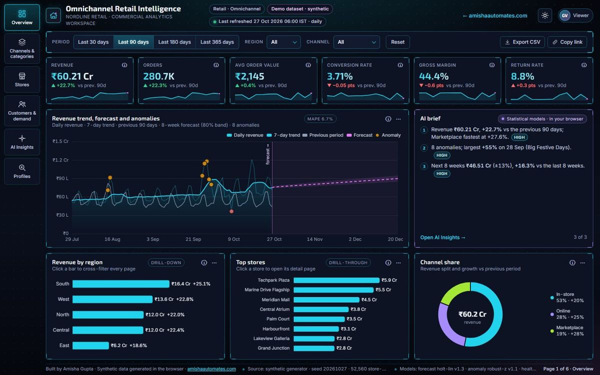

RetailHolographic HUD
Omnichannel Retail Intelligence
Revenue, channels, categories and 24 stores in one flight-deck view, with an 8-week forecast, anomaly flags and a health score for every store.
- 7 pages
- Store → manager drill-through
- 8-week forecast
- Light + dark